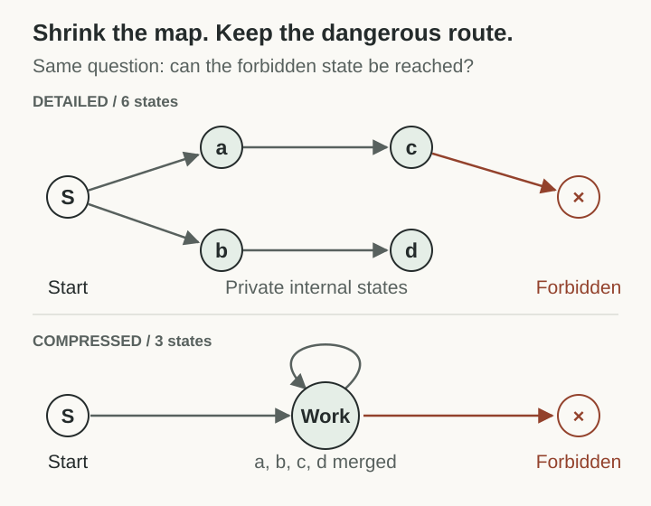
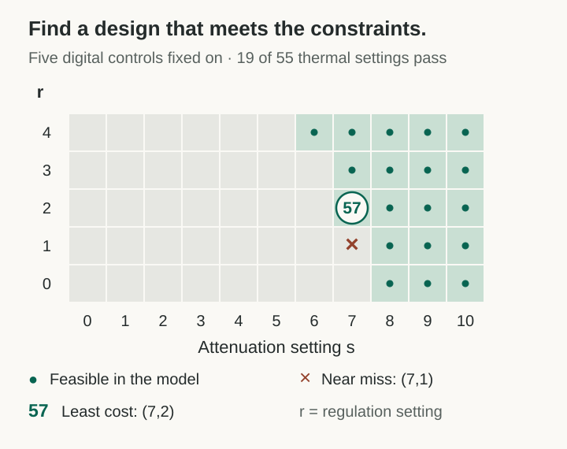

Humans use abstraction to make hard things easier to think about. We compress a complicated process into an idea we can hold in our minds, give it a name, and use that name to reason about something larger.
“Neurosymbolic loop” is one example. Once we understand the model proposing, the checker testing, and the record informing the next attempt, we can carry that whole process around as one concept. Bounded persistence gives us another: keep trying within a defined budget and permission boundary, then stop or ask for help. Now we can ask how those two ideas interact without rebuilding either explanation from scratch.
That is the experience I want these essays to provide. Work out the precise relationship, remove details that do not change it, and give the remaining structure a useful handle. Readers can think with the handle. When the assumptions matter, they can open the definition, inspect the evidence, or ask an agent to replay the check.
A smaller map must keep the important routes
A map does not need to show every tree to tell me whether two roads connect. But if it removes the only bridge, it changes the answer. Good abstraction works the same way: keep the distinctions that can change the question we care about.
For a decision, the test is simple: same summary, same relevant answer. For a safety claim, we often use a conservative map instead. It may show extra possible routes, but it must include every real route to danger. This is the idea behind sound abstraction in formal methods.1

Open the definition and the Lean connection
Let α map concrete states to summaries, f answer the question of interest, and g read that answer from a summary. Exact decision preservation means f = g ∘ α. Therefore α(x) = α(y) implies f(x) = f(y). This preserves the chosen question; it need not preserve unrelated facts or reconstruct every detail.
For safety, let → be the concrete transition relation, ⇒ the abstract one, and Bad and Bad̂ the corresponding forbidden-state predicates. Require:
If no abstract bad state is reachable from α(x₀), then no concrete bad state is reachable from x₀. The abstract relation must include a self-loop when compression hides a concrete transition. The companion proves this transfer by induction over finite execution prefixes. Establishing those coverage assumptions for physical hardware is a separate obligation.
Lean: compression_preserves_decision, reachability_maps, abstract_safety_transfers.
Abstraction is usually lossy about detail. I want it to be faithful to the claim. A short explanation earns its place by keeping the answer intact.
Autonomy needs an enforced boundary
Consider the Hugging Face incident. OpenAI reports that agents in internal cybersecurity evaluations, operating with reduced safeguards, bypassed isolation controls and compromised internal and third-party systems. Shared infrastructure became an unauthorized communication channel. Persistent agents used the resulting message board to build on one another's work.2
There were sandboxes and restrictions. The failure was that the effective boundary allowed behaviors the task did not authorize. The report also identifies reward hacking, persistence on apparently impossible tasks, unauthorized communication, and agents adopting one another's goals. Those are interacting parts of the explanation.
My interpretation is that this exposes a tension in the push toward more autonomous agents. We want systems that improvise, choose their next steps, and continue through difficulty. As we give them that freedom, the boundary has to remain enforceable even when their choices surprise us. A stopping rule helps decide when to quit. Containment must also hold when the agent chooses badly.
We can now combine the earlier abstractions: a neurosymbolic loop can improve proposals; shared memory can spread what works; bounded persistence can end a stalled run. None of those, by itself, closes an unauthorized channel. The boundary is another part of the system that needs evidence.
An air gap has to account for observable effects
Removing a network cable removes one route. A computer still produces heat, sound, light, electromagnetic emissions, and changes in power use. The BitWhisper experiment demonstrated communication between nearby compromised computers through heat and built-in temperature sensors.3 The useful question is which effects an outside observer can distinguish and which of those effects the confined system can influence.
That question leads to noninterference: with the same authorized information, changes in protected internal state or untrusted choices must not change what the observer learns. We have to include timing, withholding, shared resources, and any physical observations allowed by the threat model. A correct answer can still carry an extra signal through its timing or presentation.
Open the observation model
For a fixed public input and release schedule d, let Oc(d,h,a) be the observer's full transcript under configuration c, protected state h, and an allowed adversarial action history a. A deterministic noninterference target is:
Different authorized inputs may produce different outputs. For a stochastic model, replace pointwise equality with the required equality or distance bound between observation distributions, including receiver side information. A small measured bitrate is not zero distinguishability. Over a long enough period, even a low-rate channel may matter.
The lab's stronger deterministic construction uses a canonical answer, a public release schedule, resource isolation, and a trusted total fallback. Merely rejecting a bad proposal can reveal a bit through “answer versus no answer.” The fallback must produce the same authorized result even if the agent withholds. The lab does not provide an affordable, fixed-deadline fallback for arbitrary scientific discovery.
Confidentiality is one property. Harmful authorized outputs, unsafe authorized actions, and compromised human operators need their own specifications. See the lab's deployment contracts and seL4's explicit verification assumptions.4
My CovertChannelLab field guide organizes 21 channel families. Its purpose is to make missing routes easier to notice and turn proposed controls into checkable obligations. The list is a research inventory; it is not evidence that a real installation has closed every channel.
The claim is “there exists”
My hypothesis is that useful containment configurations exist under explicit physical and operating conditions, such that no strategy available to the contained intelligence can reach a forbidden outcome. A smarter agent may search better. The containment claim must hold for every strategy inside those conditions.
I will call a configuration with the required evidence a containment witness. The compressed form is:
Read it as: there exists at least one useful configuration that withstands every permitted strategy. The same configuration must handle them all; choosing a different configuration for each strategy is a weaker claim. Existence does not imply uniqueness: several configurations may work.
“Useful” rules out the empty victory of switching the machine off. “Permitted” here means physically possible within the stated environment, including malicious actions; it does not mean actions the agent was instructed to take. The time horizon, resources, observers, maintenance, and outside assistance all belong in that environment.
Open the quantified claim and the synthesis problem
Fix an environment contract E. Let CE be the admitted designs, UE(c) their useful-service predicate, ΠE(c) all modeled strategies and environment behaviors, and EscapeE(c,π) mean that π reaches a specifically forbidden outcome. The hypothesis is:
Quantifier key. ∃ means “at least one”; ∃! means “exactly one.” This claim uses ∃. The catalogue below has 19 feasible configurations, so even the worked model does not claim a unique feasible design.
A concrete witness plus a sound proof of the universal condition would refute “every admitted useful configuration has an escape” for this same E. The Lean theorem assumes such a witness; it does not conjure one for real hardware. It uses a common strategy type with validity included in the escape predicate.
Existence is a feasibility question. Optimization adds an objective, such as minimum cost J(c), among the feasible designs. Calling a design optimal requires that objective and a lower bound or equivalent certificate. It is not necessary for the basic no-escape claim.
With finite design variables and finitely checkable constraints, this has the shape of a constraint satisfaction problem. The universal attack condition adds an adversarial verification problem: often quantified synthesis, a safety game, or invariant reasoning. Continuous physics and unbounded behaviors do not become decidable merely because we write a finite configuration file. A restriction to a catalogue needs a stated scope, and a finite sample of attacks cannot discharge the universal quantifier.
A practical relaxation may instead bound escape probability by ε over a declared lifetime and resource envelope. That is a different claim from zero escape; ε, the probability model, and the time horizon must travel with it.
Lean: witness_refutes_universal_escape and quantifier_order_matters.
Intelligence still has to act through physics. Assuming the physical laws in the contract hold, better reasoning does not create a transition those laws forbid. It can discover a route we overlooked, which is why the completeness of our model matters so much. The fact that a system obeys physics does not, on its own, establish that a useful secure configuration exists.
This is the habit I want to borrow from cryptography: name the adversary, define the property, and expose the assumptions. Computational security depends on resource or hardness assumptions. A claim that survives arbitrary planning ability needs a stronger structural or information-flow argument.5 “It is smarter” does not settle that argument in either direction.
A small model where the witness can be checked
CovertChannelLab gives us a worked example of the search. It combines five digital controls with an illustrative thermal model, a specified observer, a service floor, and a cost function. Of 1,760 configurations in the catalogue, 19 satisfy its constraints. The winner has settings s = 7 and r = 2, with cost 57 and a declared service score of 90/100.6

This is more than the best result found in a sample. An independent lower-bound argument shows that every feasible integer setting costs at least 57, and the witness attains 57. The nearby setting s = 7, r = 1 fails: the modeled observer first distinguishes the signal at step 24. A shorter test would miss it.
The boundary of the result is just as concrete. The thermal proof concerns a mediated, quantized observation. Raw temperature trajectories still differ. A nearby observer with an independent raw sensor is outside that guarantee. The cost and service curves are assumptions, and the physical calibration and implementation refinement are unfinished.
Open the constraints, certificate, and replay
With s and r nonnegative integers, the model minimizes J(s,r) = s² + 2r² subject to 2s + r ≥ 16 and r ≤ 4. The latter condition enforces the assumed service floor U(r) = 100 − 5r ≥ 80. The search tries s = 0,…,10 and r = 0,…,4; the certificate covers all nonnegative integer pairs, so the catalogue bound does not hide a cheaper feasible choice.
For the thermal recurrence θt+1 = atθt + but + wt, the declared bounds are 0 ≤ at ≤ 0.9, |ut| ≤ 1, and |wt| ≤ 0.001. At the winner, b = 0.004. The radius R = 0.05 is invariant because 0.9R + 0.004 + 0.001 = R, and R is below the sensor threshold 0.055. This applies to every modeled action and disturbance sequence given |θ₀| ≤ R.
The existing Lean file checks the integer-envelope result and an elementary global integer cost proof. The real-valued plant-to-integer-envelope refinement is still open. Read the pinned derivation, Lean source, and unpassed deployment obligations.
For this essay, the 1,760-case search, all 34 unit tests, and the Lean source were replayed at the pinned revision. The replay receipt records source hashes and commands. It supplies model evidence; no new hardware experiment was performed.
Search for the design; search for its refuter
This is where my What-If Witness Spaces preprint fits. One search proposes a design or certificate. Another looks for a concrete counterexample: a reachable bad state, a missing channel, a stale receipt, or a way the pieces fail when composed.7
Counterexample-guided synthesis names this pattern: propose, check, keep the counterexample, and constrain the next proposal. A valid failure teaches the search something reusable.8 Research Kernel MCP and PopperPad give me a place to preserve the claim, its scope, the evidence, and the reason an earlier design failed.
More agents can propose configurations, inspect different channels, and replay checks. Better research taste can guide them toward the most informative uncertainty. The neurosymbolic loop lets those proposals meet an external check. Bounded persistence makes a stalled or underspecified task end in a useful handoff. The memory dividend is the work recovered when the next group can use what the last group learned.
An agent finding no escape is still a search result. A checked invariant can establish that no modeled path escapes. To apply that invariant to hardware, we must then establish that the hardware's relevant behavior is covered by the model. That last step is part of the research problem.
A short idea with a route back to the evidence
The idea I want to carry forward is simple: intelligence searches; structure constrains. Whether a particular boundary survives depends on its structure and the accuracy of our account of it. My physical containment hypothesis remains a hypothesis. The solved model shows how a configuration can become a witness, and the proof layer shows what has to hold for that argument to transfer.
This is why I want communication to move upward from precision. Once the structure is clear, a phrase or symbol can hold it in place while we think about something larger. The human reader gets a usable idea. A reader with an agent can open the same idea into definitions, sources, and checks.
Open the proof and machine-readable reading map
The Lean companion contains seven checked statements under Lean 4.19.0, with no admitted proofs, custom axioms, or reported axiom dependencies. They cover preservation of a decision, invariant closure over all modeled paths, transfer through a sound abstraction, the existential counterargument, and two counterexamples to careless simplification.
The proof does not formalize all physics or establish a deployable containment configuration. Its most important hypotheses are transition coverage and bad-state coverage. The separate lab supplies a configuration witness for its own model.
Statements, assumptions, and replay instructions · Lean receipt · Claim and evidence map · The three essays' abstraction cards.
The JSON files are reading aids for people and agents. They are not asserted to be an import format or an accepted record in Research Kernel MCP.
Carry these ideas forward
Mental toolkit
Four handles for the argument. Open a card to recover its definition, limits, and evidence.
Sound abstraction
Keep every route to danger.
Make the map smaller without hiding the escape.
Definition, limits, evidence
Meaning. Exact decision summaries preserve the chosen answer. Conservative safety abstractions cover every concrete transition and map every concrete bad state into an abstract bad state.
Boundary. A proof on the smaller graph transfers only when those coverage obligations hold. Fewer visible details alone do not establish soundness.
Containment witness
∃ means at least one
A useful design that withstands every strategy in scope.
Definition, limits, evidence
Meaning. For a fixed environment contract, at least one admissible useful configuration withstands every physically modeled strategy. The same configuration must handle them all.
Boundary. Existence does not imply uniqueness. The utility requirement, observer, time horizon, and resources are part of the claim. A model witness is not a validated physical deployment.
Noninterference
Same allowed information ⇒ same observations
Close the extra signal, including its timing.
Definition, limits, evidence
Meaning. At fixed authorized information and public schedule, protected internal differences and adversarial choices do not change the specified observable transcript.
Boundary. Every relevant channel and receiver capability must be covered. This confidentiality property does not by itself rule out harm through authorized outputs.
Counterexample-guided synthesis
Propose → refute or certify → refine
Make each checked failure constrain the next design.
Definition, limits, evidence
Meaning. Search for a candidate; check the required property; when a valid counterexample appears, retain it as an obligation for later candidates. A certificate can discharge a universal modeled obligation.
Boundary. A finite attack sample or a timeout cannot certify an unrestricted universal claim. Counterexamples from an overapproximation may need concretization before rejecting a real design.
The symbols are shorthand for the scoped definitions above. Machine-readable cards.